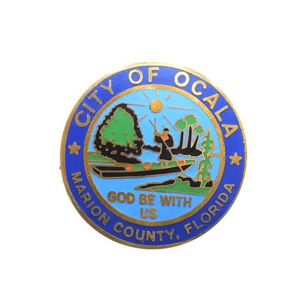

3 Day Forecast
 85 °F
85 °F
Ocala Municipality
Silver Springs
For millennia, humans have been captivated by the stunning beauty and crystal clear waters of one of America’s largest springs. Experience a Silver Springs Glass Bottom Boat tour. Kayak the five-mile Silver River. Explore the Silver River Museum and Cracker Village. Camping, hiking, dining and shopping as well!
Downtown Ocala is your one-stop, one-of-a kind destination experience that caters to all ages.
Ocala National Forest
The Ocala National Forest has four wilderness areas designated by Congress as places where habitats are untrammeled by man, protected and managed to preserve their natural state.
Ocala Local Businesses
Harry's Seafood Bar & Grille, established in 1987, serves the very best of southern, cajun and creole flavors in classic and modern dishes. Full bar is available at each location and offers beer, wine, liquor and Harry's own unique cocktail creations.
Marley Mae Market & Paperie. Invitations, wood creations and all the custom items that the shop offers. All sorts of item from creating invitations for friends, eventually making shirts and other custom goods. The shop is in a prime location on the Ocala downtown square.
For the freshest and most delicious sandwiches, wraps, soups and salads stop by to see us! We also offer deli meats and cheeses by the pound. Call us for our daily specials.
COME CHECK THIS OUT!
Come Join the board of members! Just click "join" tab and fill out the form to help be part of the growth and progress of this amazing community. Check out all the features that our community commerce has to offer to all of Ocala. What Is a Chamber of Commerce? Networking with other businesses and professionals within your community can strengthen the business relationships you have and increase the potential for more business opportunities. Participating in your local chamber of commerce can also help you reach new customers. Understanding the chamber of commerce meaning and how it works for local businesses can help you get more out of it.
